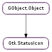

| Subclasses: | Gkbd.Status |
|---|
| static | new() |
| static | new_from_file(filename) |
| static | new_from_gicon(icon) |
| static | new_from_icon_name(icon_name) |
| static | new_from_pixbuf(pixbuf) |
| static | new_from_stock(stock_id) |
| static | position_menu(menu, user_data) |
| get_geometry() | |
| get_gicon() | |
| get_has_tooltip() | |
| get_icon_name() | |
| get_pixbuf() | |
| get_screen() | |
| get_size() | |
| get_stock() | |
| get_storage_type() | |
| get_title() | |
| get_tooltip_markup() | |
| get_tooltip_text() | |
| get_visible() | |
| get_x11_window_id() | |
| is_embedded() | |
| set_from_file(filename) | |
| set_from_gicon(icon) | |
| set_from_icon_name(icon_name) | |
| set_from_pixbuf(pixbuf) | |
| set_from_stock(stock_id) | |
| set_has_tooltip(has_tooltip) | |
| set_name(name) | |
| set_screen(screen) | |
| set_title(title) | |
| set_tooltip_markup(markup) | |
| set_tooltip_text(text) | |
| set_visible(visible) |
| Name | Type | Flags | Description |
|---|---|---|---|
| embedded | bool | r | Whether the status icon is embedded |
| file | str | w | Filename to load and display |
| gicon | Gio.Icon | r/w | The Gio.Icon being displayed |
| has-tooltip | bool | r/w | Whether this tray icon has a tooltip |
| icon-name | str | r/w | The name of the icon from the icon theme |
| orientation | Gtk.Orientation | r | The orientation of the tray |
| pixbuf | GdkPixbuf.Pixbuf | r/w | A GdkPixbuf.Pixbuf to display |
| screen | Gdk.Screen | r/w | The screen where this status icon will be displayed |
| size | int | r | The size of the icon |
| stock | str | r/w | Stock ID for a stock image to display |
| storage-type | Gtk.ImageType | r | The representation being used for image data |
| title | str | r/w | The title of this tray icon |
| tooltip-markup | str | r/w | The contents of the tooltip for this tray icon |
| tooltip-text | str | r/w | The contents of the tooltip for this widget |
| visible | bool | r/w | Whether the status icon is visible |
| Name | Parameters | Return | Description |
|---|---|---|---|
| activate | Gets emitted when the user activates the status icon. If and how status icons can activated is platform-dependent. Unlike most GObject.SignalFlags.ACTION signals, this signal is meant to be used by applications and should be wrapped by language bindings. | ||
| button-press-event | Gdk.Event | bool | The ::button-press-event signal will be emitted when a button (typically from a mouse) is pressed. Whether this event is emitted is platform-dependent. Use the ::activate and ::popup-menu signals in preference. |
| button-release-event | Gdk.Event | bool | The ::button-release-event signal will be emitted when a button (typically from a mouse) is released. Whether this event is emitted is platform-dependent. Use the ::activate and ::popup-menu signals in preference. |
| int, int | Gets emitted when the user brings up the context menu of the status icon. Whether status icons can have context menus and how these are activated is platform-dependent. The button and activate_time parameters should be passed as the last to arguments to Gtk.Menu.popup (). Unlike most GObject.SignalFlags.ACTION signals, this signal is meant to be used by applications and should be wrapped by language bindings. | ||
| query-tooltip | int, int, bool, Gtk.Tooltip | bool | Emitted when the hover timeout has expired with the cursor hovering above status_icon ; or emitted when status_icon got focus in keyboard mode. Using the given coordinates, the signal handler should determine whether a tooltip should be shown for status_icon. If this is the case True should be returned, False otherwise. Note that if keyboard_mode is True, the values of x and y are undefined and should not be used. The signal handler is free to manipulate tooltip with the therefore destined function calls. Whether this signal is emitted is platform-dependent. For plain text tooltips, use Gtk.StatusIcon :tooltip-text in preference. |
| scroll-event | Gdk.Event | bool | The ::scroll-event signal is emitted when a button in the 4 to 7 range is pressed. Wheel mice are usually configured to generate button press events for buttons 4 and 5 when the wheel is turned. Whether this event is emitted is platform-dependent. |
| size-changed | int | bool | Gets emitted when the size available for the image changes, e.g. because the notification area got resized. |
| Name | Type | Access |
|---|---|---|
| parent_instance | GObject.Object | r |
Bases: GObject.Object
The “system tray” or notification area is normally used for transient icons that indicate some special state. For example, a system tray icon might appear to tell the user that they have new mail, or have an incoming instant message, or something along those lines. The basic idea is that creating an icon in the notification area is less annoying than popping up a dialog.
A Gtk.StatusIcon object can be used to display an icon in a “system tray”. The icon can have a tooltip, and the user can interact with it by activating it or popping up a context menu. Critical information should not solely be displayed in a Gtk.StatusIcon, since it may not be visible (e.g. when the user doesn’t have a notification area on his panel). This can be checked with Gtk.StatusIcon.is_embedded ().
On X11, the implementation follows the freedesktop.org “System Tray” specification. Implementations of the “tray” side of this specification can be found e.g. in the GNOME 2 and KDE panel applications.
Note that a Gtk.StatusIcon is not a widget, but just a GObject.Object. Making it a widget would be impractical, since the system tray on Win32 doesn’t allow to embed arbitrary widgets.
| Returns: | a new Gtk.StatusIcon |
|---|---|
| Return type: | Gtk.StatusIcon |
Creates an empty status icon object.
| Parameters: | filename (str) – a filename |
|---|---|
| Returns: | a new Gtk.StatusIcon |
| Return type: | Gtk.StatusIcon |
Creates a status icon displaying the file filename.
The image will be scaled down to fit in the available space in the notification area, if necessary.
| Parameters: | icon (Gio.Icon) – a Gio.Icon |
|---|---|
| Returns: | a new Gtk.StatusIcon |
| Return type: | Gtk.StatusIcon |
Creates a status icon displaying a Gio.Icon. If the icon is a themed icon, it will be updated when the theme changes.
| Parameters: | icon_name (str) – an icon name |
|---|---|
| Returns: | a new Gtk.StatusIcon |
| Return type: | Gtk.StatusIcon |
Creates a status icon displaying an icon from the current icon theme. If the current icon theme is changed, the icon will be updated appropriately.
| Parameters: | pixbuf (GdkPixbuf.Pixbuf) – a GdkPixbuf.Pixbuf |
|---|---|
| Returns: | a new Gtk.StatusIcon |
| Return type: | Gtk.StatusIcon |
Creates a status icon displaying pixbuf.
The image will be scaled down to fit in the available space in the notification area, if necessary.
| Parameters: | stock_id (str) – a stock icon id |
|---|---|
| Returns: | a new Gtk.StatusIcon |
| Return type: | Gtk.StatusIcon |
Creates a status icon displaying a stock icon. Sample stock icon names are Gtk.STOCK_OPEN, Gtk.STOCK_QUIT. You can register your own stock icon names, see Gtk.IconFactory.add_default () and Gtk.IconFactory.add ().
| Parameters: |
|
|---|---|
| Return type: |
Menu positioning function to use with Gtk.Menu.popup () to position menu aligned to the status icon user_data.
| Returns: | True if the location information has been filled in |
|---|---|
| Return type: | bool, screen: Gdk.Screen, area: cairo.RectangleInt, orientation: Gtk.Orientation |
Obtains information about the location of the status icon on screen. This information can be used to e.g. position popups like notification bubbles.
See Gtk.StatusIcon.position_menu () for a more convenient alternative for positioning menus.
Note that some platforms do not allow GTK+ to provide this information, and even on platforms that do allow it, the information is not reliable unless the status icon is embedded in a notification area, see Gtk.StatusIcon.is_embedded ().
| Returns: | the displayed icon, or None if the image is empty |
|---|---|
| Return type: | Gio.Icon |
Retrieves the Gio.Icon being displayed by the Gtk.StatusIcon. The storage type of the status icon must be Gtk.ImageType.EMPTY or Gtk.ImageType.GICON (see Gtk.StatusIcon.get_storage_type ()). The caller of this function does not own a reference to the returned Gio.Icon.
If this function fails, icon is left unchanged;
| Returns: | current value of has-tooltip on status_icon. |
|---|---|
| Return type: | bool |
Returns the current value of the has-tooltip property. See Gtk.StatusIcon :has-tooltip for more information.
| Returns: | name of the displayed icon, or None if the image is empty. |
|---|---|
| Return type: | str |
Gets the name of the icon being displayed by the Gtk.StatusIcon. The storage type of the status icon must be Gtk.ImageType.EMPTY or Gtk.ImageType.ICON_NAME (see Gtk.StatusIcon.get_storage_type ()). The returned string is owned by the Gtk.StatusIcon and should not be freed or modified.
| Returns: | the displayed pixbuf, or None if the image is empty. |
|---|---|
| Return type: | GdkPixbuf.Pixbuf |
Gets the GdkPixbuf.Pixbuf being displayed by the Gtk.StatusIcon. The storage type of the status icon must be Gtk.ImageType.EMPTY or Gtk.ImageType.PIXBUF (see Gtk.StatusIcon.get_storage_type ()). The caller of this function does not own a reference to the returned pixbuf.
| Returns: | a Gdk.Screen. |
|---|---|
| Return type: | Gdk.Screen |
Returns the Gdk.Screen associated with status_icon.
| Returns: | the size that is available for the image |
|---|---|
| Return type: | int |
Gets the size in pixels that is available for the image. Stock icons and named icons adapt their size automatically if the size of the notification area changes. For other storage types, the size-changed signal can be used to react to size changes.
Note that the returned size is only meaningful while the status icon is embedded (see Gtk.StatusIcon.is_embedded ()).
| Returns: | stock id of the displayed stock icon, or None if the image is empty. |
|---|---|
| Return type: | str |
Gets the id of the stock icon being displayed by the Gtk.StatusIcon. The storage type of the status icon must be Gtk.ImageType.EMPTY or Gtk.ImageType.STOCK (see Gtk.StatusIcon.get_storage_type ()). The returned string is owned by the Gtk.StatusIcon and should not be freed or modified.
| Returns: | the image representation being used |
|---|---|
| Return type: | Gtk.ImageType |
Gets the type of representation being used by the Gtk.StatusIcon to store image data. If the Gtk.StatusIcon has no image data, the return value will be Gtk.ImageType.EMPTY.
| Returns: | the title of the status icon |
|---|---|
| Return type: | str |
Gets the title of this tray icon. See Gtk.StatusIcon.set_title ().
| Returns: | the tooltip text, or None. You should free the returned string with GLib.free () when done. |
|---|---|
| Return type: | str |
Gets the contents of the tooltip for status_icon.
| Returns: | the tooltip text, or None. You should free the returned string with GLib.free () when done. |
|---|---|
| Return type: | str |
Gets the contents of the tooltip for status_icon.
| Returns: | True if the status icon is visible |
|---|---|
| Return type: | bool |
Returns whether the status icon is visible or not. Note that being visible does not guarantee that the user can actually see the icon, see also Gtk.StatusIcon.is_embedded ().
| Returns: | An 32 bit unsigned integer identifier for the underlying X11 xlib.Window |
|---|---|
| Return type: | int |
This function is only useful on the X11/freedesktop.org platform. It returns a window ID for the widget in the underlying status icon implementation. This is useful for the Galago notification service, which can send a window ID in the protocol in order for the server to position notification windows pointing to a status icon reliably.
This function is not intended for other use cases which are more likely to be met by one of the non-X11 specific methods, such as Gtk.StatusIcon.position_menu ().
| Returns: | True if the status icon is embedded in a notification area. |
|---|---|
| Return type: | bool |
Returns whether the status icon is embedded in a notification area.
| Parameters: | filename (str) – a filename |
|---|
Makes status_icon display the file filename. See Gtk.StatusIcon.new_from_file () for details.
| Parameters: | icon (Gio.Icon) – a Gio.Icon |
|---|
Makes status_icon display the Gio.Icon. See Gtk.StatusIcon.new_from_gicon () for details.
| Parameters: | icon_name (str) – an icon name |
|---|
Makes status_icon display the icon named icon_name from the current icon theme. See Gtk.StatusIcon.new_from_icon_name () for details.
| Parameters: | pixbuf (GdkPixbuf.Pixbuf or None) – a GdkPixbuf.Pixbuf or None |
|---|
Makes status_icon display pixbuf. See Gtk.StatusIcon.new_from_pixbuf () for details.
| Parameters: | stock_id (str) – a stock icon id |
|---|
Makes status_icon display the stock icon with the id stock_id. See Gtk.StatusIcon.new_from_stock () for details.
| Parameters: | has_tooltip (bool) – whether or not status_icon has a tooltip |
|---|
Sets the has-tooltip property on status_icon to has_tooltip. See Gtk.StatusIcon :has-tooltip for more information.
| Parameters: | name (str) – the name |
|---|
Sets the name of this tray icon. This should be a string identifying this icon. It is may be used for sorting the icons in the tray and will not be shown to the user.
| Parameters: | screen (Gdk.Screen) – a Gdk.Screen |
|---|
Sets the Gdk.Screen where status_icon is displayed; if the icon is already mapped, it will be unmapped, and then remapped on the new screen.
| Parameters: | title (str) – the title |
|---|
Sets the title of this tray icon. This should be a short, human-readable, localized string describing the tray icon. It may be used by tools like screen readers to render the tray icon.
| Parameters: | markup (str or None) – the contents of the tooltip for status_icon, or None |
|---|
Sets markup as the contents of the tooltip, which is marked up with the Pango text markup language.
This function will take care of setting Gtk.StatusIcon :has-tooltip to True and of the default handler for the Gtk.StatusIcon ::query-tooltip signal.
See also the Gtk.StatusIcon :tooltip-markup property and Gtk.Tooltip.set_markup ().
| Parameters: | text (str) – the contents of the tooltip for status_icon |
|---|
Sets text as the contents of the tooltip.
This function will take care of setting Gtk.StatusIcon :has-tooltip to True and of the default handler for the Gtk.StatusIcon ::query-tooltip signal.
See also the Gtk.StatusIcon :tooltip-text property and Gtk.Tooltip.set_text ().